José Victor M Tavares
Oi, sou José Victor, ou só Zé ou Victor. Tenho 21 (passou rápido, até um dia desses eram 17 e ainda não sabia o que fazer da vida, não que hoje em dia eu saiba), estou no terceiro período (ou será o quinto? Na verdade ninguém sabe) do BC&T.

Sobre
Conclui o ensino médio no Floca, uma escola estadual próxima a UFRN. Não tinha expectativa de fazer uma faculdade, nem cheguei a estudar pro Enem, mas fiquei acima da nota de corte e cá estamos. Sempre gostei e fiquei fascinado com tecnologias, me divertia mais abrindo brinquedos e descobrindo como eles funcionavam, do que realmente brincando (meus pais nunca gostaram desse hobbie, mas acho que a possibilidade de cursar engeinharia da computação/mec pesou mais do que apenas a nota de corte).
Esse joguinho aqui do lado foi meu projeto em LiP, sei que é bem simplita, mas é meu primeiro código mais elaborado além de uma lista de exercícios. Adorei fazer esse projeto (sim, tinha que ser de navinha) e tenho tentado voltar nele para melhora-lo (se ficar bom, quem sabe até lanço numa app store).
Tento aprender continuamente e passar esse conhecimento pros meus amigos, colegas e até completos desconhecidos, esse sentimento é de fato gratificante.

Curiosidades:
Já devo ter mais horas gastas com Star Wars do que consolidadas no Sigaa (queria ter gasto esse tempo com algo mais produtivo, aquele desumano do JJ Abrams); Aos 11, copiei um código de um livro e danifiquei um notebook; Adoro animais, tenho dois cachorros Luke e Chorão; Talvez eu não saiba como usar ponto e vírgula; Embora raras, aproveito muito as longas noites de sono (com calma nessas listas, professor); Não tenho muito conteúdo no github mas tô tentando mudar isso
|  |

|

|
|---|---|---|

|

|